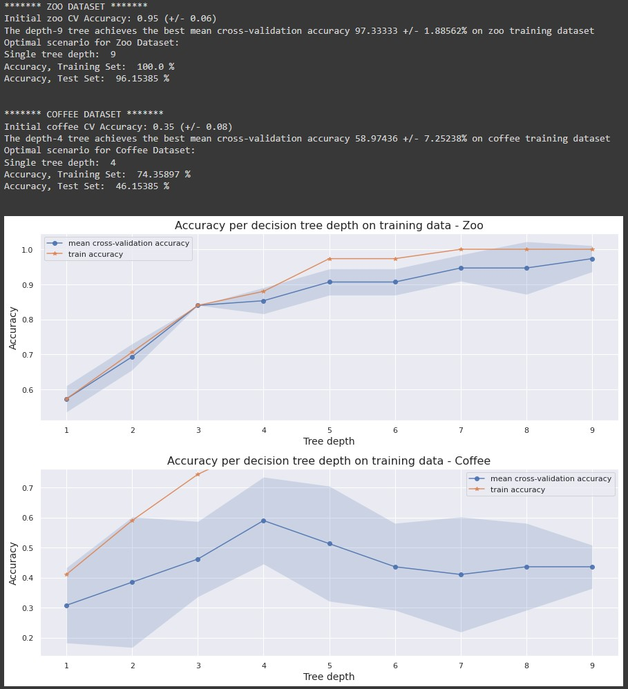

Master of Applied Cybernetics - CECS8001 – Build Journey
David Auricht - U7446851
Fortnight By Fortnight - Semester One
Fortnight 1: A Tale of Two Chatbots/Intro2Python
Covered: Skill 1
The introductory fortnight was instrumental in rebuilding confidence in my Python knowledge – The chatbot example was straightforward to understand as a concept and moreover it was instantly clear that even a simple program could be of value to the concepts being covered within the Master’s.
Once the coordinate system was understood, the fortnight’s homework was similarly motivating in that it gave confidence in both my existing basic ability, and my capacity to both extend this knowledge and assist others in their learning. I picked up the existing code and refactored it in a manner that made sense to me as a cohesive package with common libraries rather than four individual, self-contained modules. Further to this, I initiated a git repository to maintain my code through the course and reached out to classmates for their letter code with the goal of building a full “font” worth of letters (which worked, for nine letters at least!):

Building an appreciation of appropriate function usage, modularisation of code, and usage of VSCode!
Fortnight 2: Purposeful Behaviour/Tic Tac Toe/Web Scraping
Covered: Skill 1
The second fortnight gave opportunity for more complicated code. It was this step up in complexity that that I found a key learning - room for a more iterative approach to solving a given problem in a way that ensured that a viable product would be delivered with every step, and the value of improvements could be considered. This approach is, of course, fundamental to Agile delivery methodologies, but was not something I had considered deeply with respect to individual projects – it is something I will aim to bring with me on future works.
Within this fortnight came another opportunity for coding learning, outside of the homework – it was my group’s turn to present the Resource Facilitation in fortnight 3, and we elected to base a component of our presentation on Suzanne Treister’s HEXEN 2.0 Tarot deck. To print the seventy-eight cards from the deck, the higher resolution variants from the site were necessary and these were only accessible through following the seventy-eight individual links, and manually saving the images one-by-one. With the Python homework in mind, and an awareness that this was exactly the sort of circumstance in which I should be trying to utilise a more efficient code-based solution. So, it was time to get to work.
I managed to avoid reinventing the wheel by identifying suitable guides online and wrangling them together to fit the fact that it would need to crawl one level deeper than just the images on a single page:
- https://www.thepythoncode.com/article/download-web-page-images-python
- https://www.thepythoncode.com/article/extract-all-website-links-python
Please refer to the appendices for full code.

Meaningful output to Terminal denoting progress of image scraping script.
Fortnight 3: Modelling, Simulation & Feedback Loops
Covered: Skill 1, Skill 2 (somewhat)
Fortnight 3 presented a nice break from Python coding for assessment, but instead introduced the Arduino via Tinkercad, and notably the variant of C++ that Arduinos run on. With this being a language I had not seen since 2009 (at a guess), the challenge of understanding the problem presented was unfamiliar and it was a reminder that not every tool lives in the land of user-friendly Python. Whilst the problem as posed was easily addressed, it presented a question that is very much relevant to the maker project – when multiple tools are available, which should you choose? Similarly, the exploration of different modelling techniques wasn’t specifically a coding task, but it did bring an awareness that there are multiple solutions to any simulation problem, and different ways in which one can be a “better” fit for the purpose than another – as the course progresses, and when undertaking the maker project, this will become increasingly relevant.
I plan to spend the holiday break tinkering with an Arduino and a micro: bit to explore this further – Either way I want to come out of this year a better, more practical coder, and do I want that to be specifically within Python, or also covering C++, Java, or something else?
Holiday Period
Covered: Skill 1, Skill 2 (somewhat)
Within the holiday period I spent significant time getting my head into the IoT space, building an understanding of Sensors and methods of data storage via an Arduino IoT explorer kit provided loaned by the School. Via a series of online tutorials (as below), I was able to explore on-device utilisation of C++ code to send data and triggering signals to cloud platforms. Within this time, I was also able to engage some degree of “building” when it came to connecting and mounting varying physical sensors.

Using the Arduino web IDE to code a temperature/humidity monitor.
While I enjoyed the early explorations here, I very quickly resolved the question I had aske of myself within fortnight 3.. The exploration of coding languages outside of Python was of interest, but inefficient and in many ways distracting from the ultimate goals of achieving suitable proficiency to be able to understand how, algorithmically, various problems could be solved and solutions implemented and perhaps more crucially the limitations and considerations involved.
This realisation allowed a pivot to Python implementations of similar learnings, utilising a micro:bit in place of the Arduino. The increased familiarity of the Python language allowed me to properly focus on the end goal and the ways in which data could be managed and online connections made, ultimately unlocking progress on the individual Maker Project.
Fortnight 4: Modelling, Simulation & Feedback Loops
Covered: Skill 1, Skill 2
As we stepped to fortnight four, I found myself challenged as I took the basic learnings of half of the previous fortnight’s work and applied it to a more complex system with both sensing and actuation. I initially challenged myself to utilise a DC motor via a dedicated shield, iterated my way to this point, and very rapidly learnt a key lesson around not overstretching to an unnecessary goal when under time stress! The stepping back to a more basic solution, with the motor powered and controlled directly by the Circuit Playground Express, rather than via a shield, afforded me the time to satisfactorily complete the video component and achieved the same end result for demonstration purposes. The lesson here can be applied more broadly – Sensing and actuating components, in the real world, may be more complicated than they seem on the surface, and there is merit to researching and understanding in advance rather than wasting time on an uneconomic solution! The video format of submission was also a challenge in a new area – It had me developing new skills to record two videos and overlay/cut them to fit sufficient commentary within the narrow three-minute limitation:

Learning some basic video-editing techniques - Embedding another video in the corner to give a second dimension to my presentation.
A key component of this fortnight’s building of skills did amount, to some degree, to “building”. In order to properly form a functional “creature” that could house the Circuit Playground Express and also allow mounting of a servo and fan, I needed a degree of basic innovation. This ended up being a trial-and-error process utilising tools available within the lab and my own home, with an output of a Lego structure and blu-tac as a bonding agent! Whilst this was obviously rudimentary, a key lesson I took was the value in delivering a functional “Minimum Viable Product” solution not only for demonstration, but for iteration – The dimensions and structure implemented with Lego could readily be measured and drawn in CAD software to 3D print the next stage of prototyping (and this is an approach I will seek to utilise in the future).
Fortnight 5: Data and Networks
Covered: N/A
Fortnight five focussed heavily on data modelling and visualisation from a course perspective, and whilst this was absolutely a new skill to me that I enjoyed toying with and look forward to exploring in the future, my time to properly delve in was limited and stood outside of my primary skill development goals for the year. Outside of the assigned CECS8001 homework, however, this fortnight was that within which I seriously kicked into the commencement of my Maker Project, as discussed later in this journal.
Fortnight 6: Introduction to Machine Learning
Covered: Skill 1
Fortnight six stepped through a machine learning pipeline's creation and usage in the form of a premade "Colab" notebook that formed a decision tree from a "zoo" dataset (classifying anuimals based on features), and then gave students to build our own decision tree with an internal dataset built on survey data about ANU coffee shops. While the homework implied the creation of a new colab notebook for the "stretch" coffee task, and I would likely have been more comfortable doing so (or, if I'm honest, building a standalone piece of Python code to run in one hit), however I decided that adding the "coffee" set to the existing notebook would provide an excellent avenue of exploring Colab as a product (in the way it was meant> to be structured, and perhaps more critically to allow side-by-side contrasting of the characteristics and behaviours of the datasets and resultant models.
Comparison of model accuracies between datasets at different decision tree depths (using techniques described at "Towards Data Science")
Unsurprisingly the results of the coffee dataset were not of a comparible accuracy to those of the zoo dataset. Perhaps a little more surprising was an examination of the data itself and the learnings on upstream causality - The "coffee" model was of too low an accuacy to be usable due to, in my opinion, the low number of respondants to the survey, the excessively high number of questions in the survey that opened up the options of one-off "niche" responses and muddied the data, and the grouping of less popular coffee shops into a collective set that inherently had internally conflicting data. Whilst a simple exercise and set, this really did speak to limitations of machine learning that could be considered at any scale and I'll certainly keep this in mind!
From a "Skill 1 - code" perspective, the forcing of a Colab notebook on us did give me an opportunity to appreciate a more linear, less modular workflow-type structure, and also the educational value of the format. Research undertaken within the bounds of this homework, particularly on understanding the impacts different tunable factors (such as, in a decision tree, tree depth) can have on a model, and also on a more basic level of the use of arrays in Python.

Dave
"Recovering Professional Cynic"
With a background in software testing, and management thereof, I come to the programme looking to hone broader interests in modern and emerging technologies and the benefits I hope they can provide to society.
Entries
-
 Intro
Intro
An introduction to myself and my journal. -
 Skills
Skills
An overview of "build" skills to be developed -
 Semester 2
Semester 2
A fortnight-by-fortnight look at skill growth -
 Maker Project
Maker Project
The semester 1 maker project's learnings -
 CPS Project
CPS Project
The semester 2 CPS project's learnings -
 Rolling Summary
Rolling Summary
Per-checkpoint status check -
 Appendices
Appendices